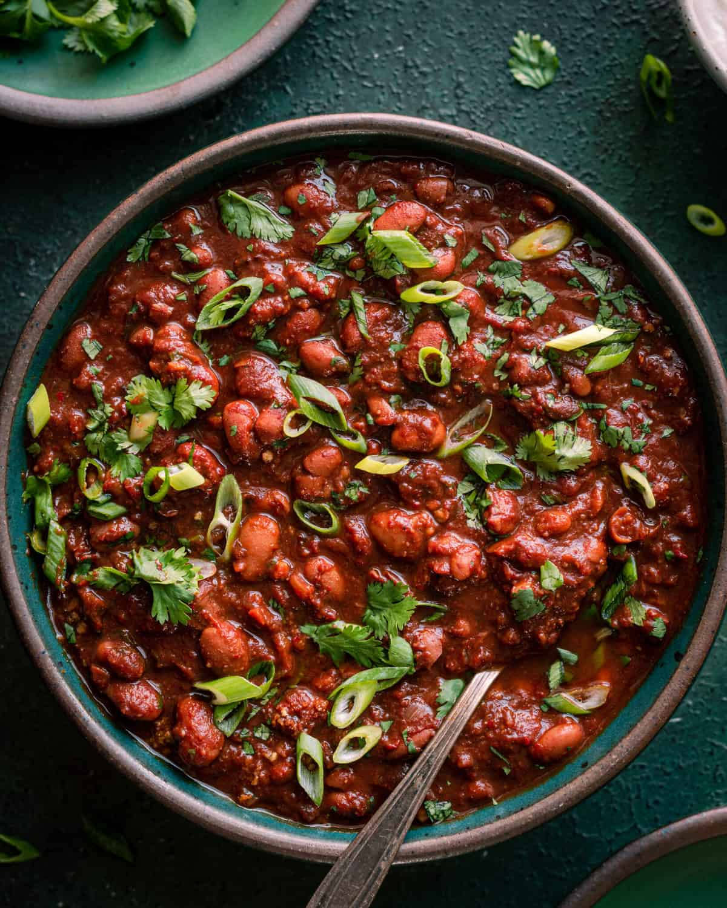

Spicy Vegan Chili

Description
A warm and savory vegan chili.
Ingredients
Chili Base
- 3 tbs olive oil
- 1 large yellow onion, diced
- 6 garlic cloves, chopped finely
- 2 jalapenos, diced
- 2 tbs tomato paste
- 3 ½ tbs homemade chili powder
- 1 tbs ground cumin
- 1 ½ tsps smoked paprika
- 1 tbs Mexican oregano
- 3/4 cup (180 mL) dry red wine
- 2 cups (480 mL) vegetable broth
- 2 (15-ounce/425g) cans of pinto beans, drained and rinsed
- 1 (15-ounce/425g) can of navy beans, drained and rinsed
- 2 tbs cocoa powder (I prefer Dutch process cocoa powder)
- 2 bay leaves
- 1 ½ tbs tamari or soy sauce
- 2 chipotle peppers in 1 tsp adobo sauce, chop the peppers
- 1 (28-ounce/800g) can whole peeled tomatoes, crushed by hand (include juices)
- 1 ½ tsps kosher salt plus more as needed
- Freshly cracked black pepper to taste
- 1 tbs pure maple syrup, plus more to finish as needed
- 1 to 1 1/2 tbs freshly squeezed lime juice
- 1 tsp red wine vinegar (or apple cider vinegar)
- 3 tbs masa harina (Mexican corn flour) (optional)
- 1 cup (12g) cilantro leaves and tender stems, chopped
Toppings of choice
- Vegan sour cream or diced avocado
- Sliced scallions or chopped cilantro
- Shredded vegan cheese or Vegan Queso
- Quick Pickled Red Onions
Directions
- Read all the instructions and notes before getting started, especially about moderating the spiciness level.
- Heat a Dutch oven or heavy-bottomed saucepan over medium-high heat. Add the olive oil, and once it’s shimmering, add the onions and season with a few pinches of salt. Stir frequently and cook the onions until nicely golden brown, stirring occasionally, about 10 minutes. If they start to burn around the edges, stir more frequently and/or add a splash of water.
- Add the garlic, jalapeños, and tomato paste, and cook for 2-3 minutes, stirring very frequently, until tomato paste is darker in color. If it starts to dry out, add a splash of water and scrape up any browned bits.
- Stir in the chili powder, cumin, paprika, and oregano and stir vigorously for 30 seconds.
- Pour in the red wine to deglaze the pot, scraping up any browned bits. Simmer rapidly for 3 to 4 minutes, or until the smell of alcohol has cooked off and it's jammy.
- Pour in the vegetable broth, pinto beans, navy beans, cocoa powder, bay leaves, soy sauce, chopped chipotle peppers + adobo sauce, hand-crushed tomatoes + their juices, salt, black pepper to taste, and 1 tablespoon maple syrup. Stir well.
- Bring the chili to a boil over high heat, then reduce to a gentle simmer (this is lowest heat on my small burner). Take care to not boil or too rapidly simmer the chili, as it will break down the beans too much.
- Cook, stirring every 10 minutes, until thick and velvety and the flavors have melded together, about 1 1/2 hours (or up to 2 hours). Discard the bay leaf.
- Stir in the masa harina, if using. Simmer for 3 minutes, until the texture has further thickened.
- Stir in 1 tablespoon lime juice, the vinegar, and cilantro. Taste and add more lime juice as needed for tanginess and add up to 1 more tablespoon maple syrup for sweetness to balance any bitterness. Season with salt and pepper, as needed.
- Serve with toppings of choice, such as pickled onions, chopped cilantro, sliced scallions, vegan sour cream, avocado, tortilla chips, etc.